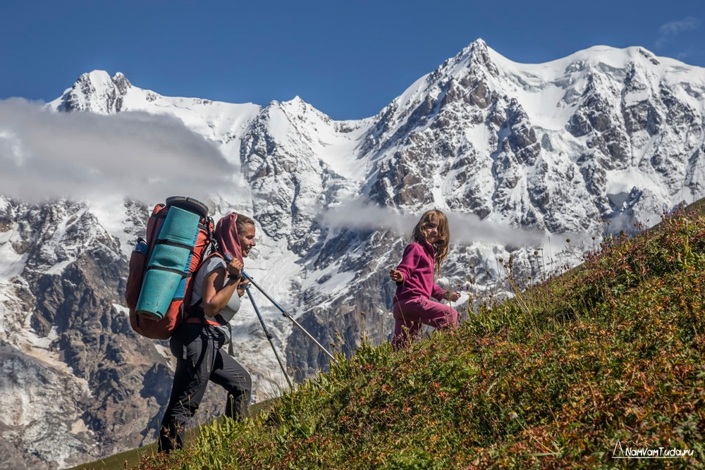
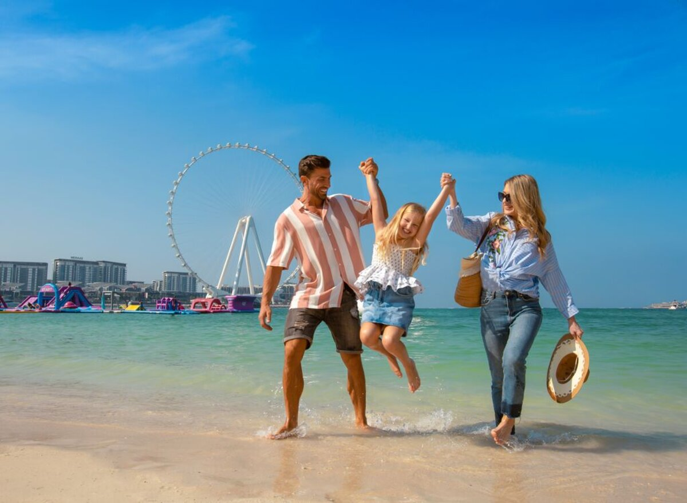

На отдых с детьми до 5 лет действует скидка 15%.

Программа My Emirates Pass. Открывайте для себя лучшие места Дубая и ОАЭ этой зимой благодаря программе My Emirates Pass.
Проведите зимний отпуск в Дубае и ОАЭ с максимальной выгодой. В рамках программы My Emirates Pass вам доступны эксклюзивные предложения более чем в 500 популярных местах ОАЭ. Просто предъявите свой посадочный талон Эмирейтс.
Наслаждайтесь солнечной зимней погодой на пляже, у бассейна или во время прогулок. Благодаря программе My Emirates Pass вам открываются потрясающие предложения при посещении ресторанов, крупных магазинов, роскошных спа‑салонов и туристических объектов.
У вас есть прекрасная возможность побывать на крупных спортивных мероприятиях, таких как турнир Emirates Airline Dubai Rugby Sevens и чемпионат по гольфу DP World Tour, а также отметить зимние праздники в декабре этого года.

Отличный отдых с детьми. В сентябре и октябре жара спадает, солнце перестает быть активным, но купаться и загорать все еще комфортно. Отдыхающих
становится меньше, а на пляжах свободнее. Это подходящее время для семейного отпуска. А еще во многих турецких отелях работает Sun Family Club, придуманная компанией
Coral Travel, для веселого, активного и развивающего отдыха семей с детьми.